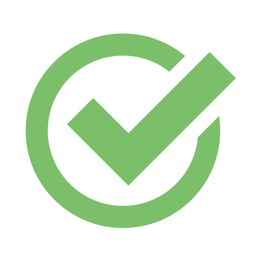

<!--
  Generated template for the SiparisLastPage page.

  See http://ionicframework.com/docs/components/#navigation for more info on
  Ionic pages and navigation.
-->
<ion-header>


</ion-header>


<ion-content padding>

  
  <ion-label class="s-text">Siparişiniz başarıyla oluşturuldu.</ion-label>

  <button class="btn-bt1" ion-button full (click)="siparislerim()"> 
      Siparişlerime git
    </button>

</ion-content>
